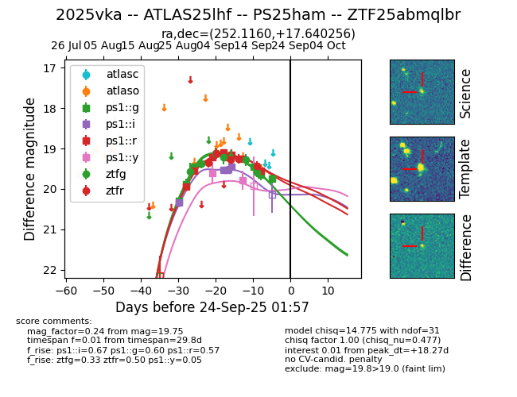
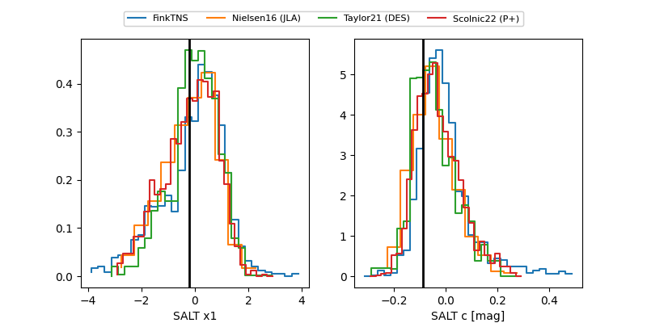

FINK: ZTF25abmqlbr
Lasair: ZTF25abmqlbr
ALeRCE: ZTF25abmqlbr
TNS: 2025vka
YSE: 2025vka
2025vka (yse,tns)
PS25ham (panstarrs)
ZTF25abmqlbr (ztf,fink)
ATLAS25lhf (atlas)
equatorial (ra, dec) = (252.1160,+17.64026)
galactic (l, b) = (36.2556,+34.87209)


last ps1::g=19.75, ps1::i=19.45, ps1::r=19.55, ps1::y=19.79, ztfg=19.58, ztfr=19.43
6 ps1::g, 4 ps1::i, 8 ps1::r, 2 ps1::y, 7 ztfg, 5 ztfr detections